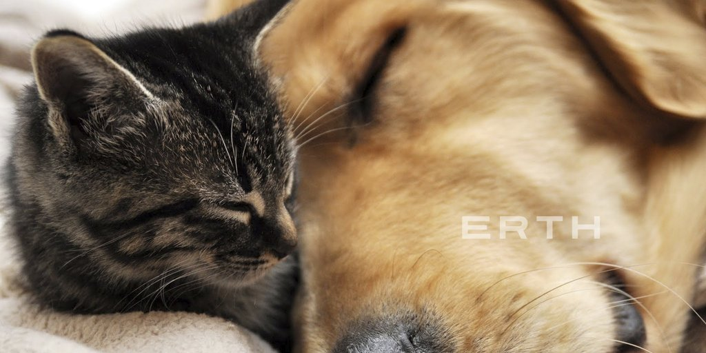
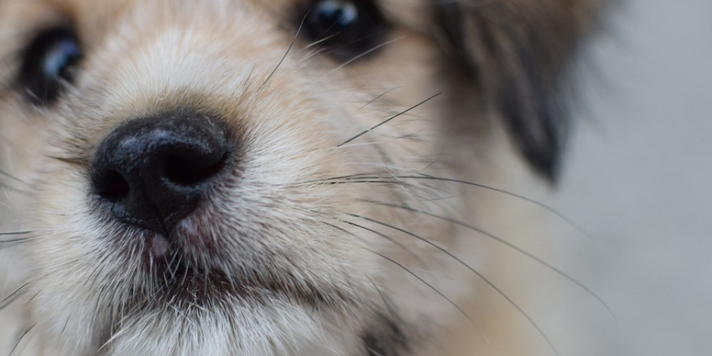

{% extends "base.html" %}
{% load static from staticfiles %}
{% block title %}
Adoptuj4Łapy - strona główna
{% endblock %}
{% block content %}

Adoptuj, nie kupuj
Wyszukuj zwierzęta czękające na adopcje w polskich schroniskach

Psy do adopcji
Znajdź swojego nowego czworonoga
Koty do adpocji
Znajdź swojego nowego czworonoga
O projekcie
Projekt wykonany z zamiłowania do zwierząt i programowania. Każdy zwierzak powinien mieć ciepły kąt i kochającego właściciela. Made by: Monika Grodecka (@mgrodecka)